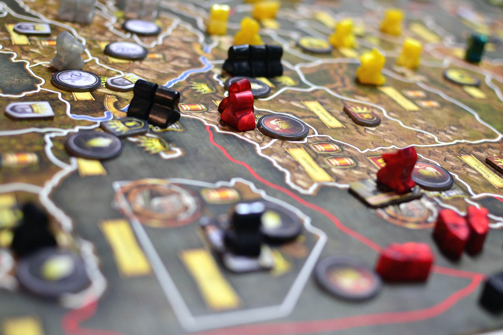

Juego de Rol - TEJ
Realizacion de un juego interactivo de Rol en lenguaje Java para una materia de la carrera, actualmente se encuentra en desarrollo.
Algoritmos y Estructura de Datos - TP3
Proyecto realizado para una entrega de trabajo de una materia de mi carrera, en la cual trabajos con Grafos, con lenguaje C++.